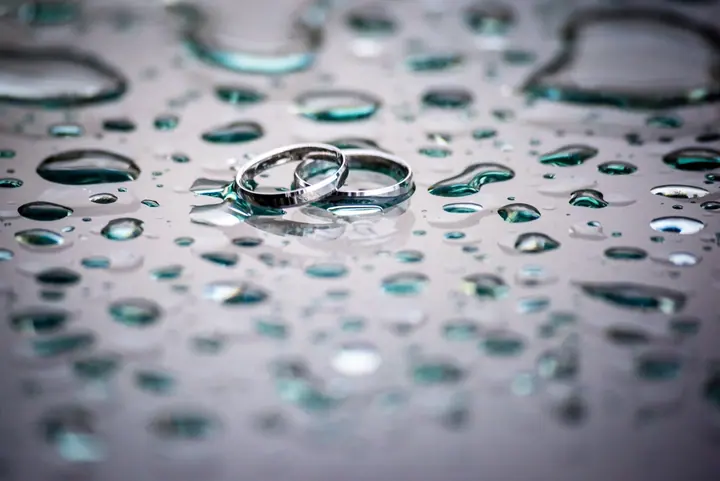
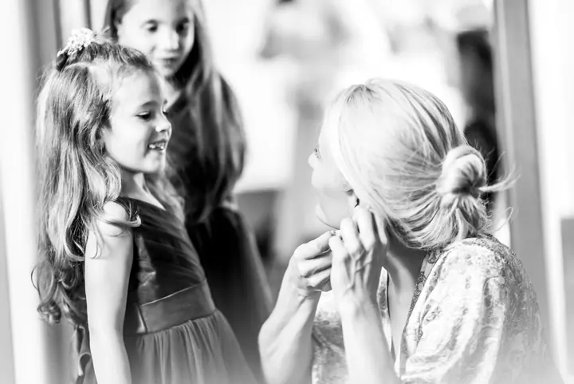
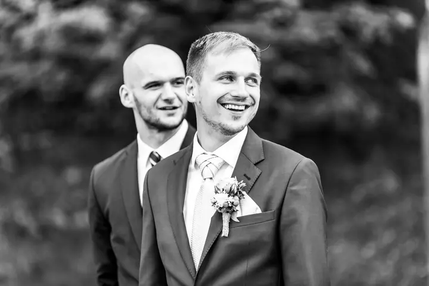
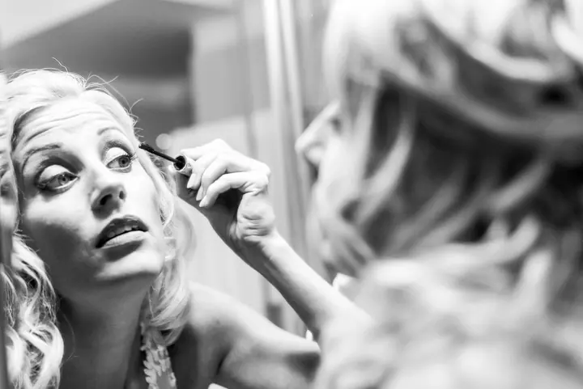

Svatební fotografie
S pohodovým přístupem zachytím atmosféru vašeho svatebního dne, jeho náladu a emoce. Podle balíčku fotím obřad, část dne nebo celý den od příprav po večerní party.





Jmenuji se Filip Komorous a jsem fotograf z Plzně, který nejraději fotí svatby. Mám pohodový přístup a hledám momenty, ze kterých je znát nálada celého dne. Kromě svateb fotím portréty, rodiny i produkty a reklamu pro firmy.
Více o mně
„Budu se snažit, aby na snímcích bylo znát, jak jste si svatbu užili.“
— Filip Komorous
S pohodovým přístupem zachytím atmosféru vašeho svatebního dne, jeho náladu a emoce. Podle balíčku fotím obřad, část dne nebo celý den od příprav po večerní party.
Individuální portrétní focení od jedné hodiny, s výběrem snímků v soukromém webovém albu. Na přání zajistím i vizážistku.
Rodinné fotografování, které můžeme podle potřeby prodloužit. Z focení dostanete soukromé webové album s padesáti a více snímky pro výběr a tisk.
Pro firmy fotím produkty ve velkých i menších sériích, image a reklamní fotografie i architekturu a interiéry. Cenu vždy připravím na míru podle vašich potřeb.
Fotografie jsou ilustrační
Jsem Filip Komorous, fotograf z Plzně. Pravidelně pracuji i v Praze, ale fotím po celé České republice a často také v zahraničí. Nejvíc času trávím na svatbách, kde mi jde hlavně o atmosféru, náladu a emoce celého dne.
Na svatbě se snažím být nenápadný a mít pohodový přístup. Chci, aby na snímcích bylo znát, jak jste si svůj den užili: slzy u líčení, smích při slibu i objetí s kamarády po obřadu.
Mimo svatby fotím portréty, rodiny, sport, interiéry a produktové a reklamní fotografie pro firmy. Mám vlastní fotoateliér a postarám se i o grafickou postprodukci a tisk fotografií.

Zavolejte nebo napište a domluvíme se, jestli máte vybraný termín ještě volný a jaký balíček se vám hodí.
Probereme průběh dne, místa a vaše přání. Schůzku můžeme spojit s krátkým předsvatebním focením, ať se před foťákem trochu rozkoukáte.
Fotím podle zvoleného balíčku, od samotného obřadu až po celý den od příprav po party. Držím se v pozadí, abyste si den v klidu užili.
Fotky najdete v soukromém webovém albu, kde je ukážete rodině a vyberete snímky k tisku. Vyretušované fotografie v plné tiskové kvalitě dostanete na USB flash disku spolu s tištěnými fotkami.
Balíček TOP na 5 hodin stojí 15 500 Kč, KOMPLET na 7 hodin 17 500 Kč a TOTAL na 11 hodin, od příprav po party, 19 000 Kč. Samotný obřad na 2 hodiny nafotím za 8 000 Kč.
Podle balíčku minimálně 250, 300 nebo 380 vyretušovaných fotografií v plné tiskové kvalitě na USB flash disku. K tomu 30 až 80 tištěných fotek 13×19 cm, které si sami vyberete.
Ano. Sídlím v Plzni a pravidelně pracuji v Praze, ale fotím po celé České republice a často také v zahraničí.
Individuální portrét začíná od 1 800 Kč za hodinu focení a v ceně je 10 vyretušovaných fotografií podle vašeho výběru. Rodinné focení vychází od 2 500 Kč. U obou dostanete soukromé webové album pro výběr snímků.